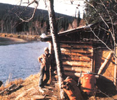

Here's some straight talk from an experienced "sourdough" about living in the Great State.
Is Alaska truly the last American frontier, promising endless possibilities for wealth and adventure? Is that state still able to produce "gold rush" or "pipeline" get-rich opportunities for anyone who happens to move there? And is plenty of land that's just ripe for homesteading still available? The answer to all these questions is yes and no. Yes, Alaska is one of the most naturally beautiful places in the world to live, and you can make a good life for yourself here. But no, it's definitely not the paradise that many people expect it to be.
My husband and I learned these truths the hard way when we quit our civil service jobs seven years ago with the intention of starting over in a new place. We wanted to go where there would be more chances for good jobs and inexpensive land . . . to a place (we imagined) like Alaska!
BOOM OR BUST
It didn't take long to learn just how mistaken we were in our conception of the forty-ninth state. Our first dashed dream was the belief that we'd find an abundance of high-paying jobs. We didn't. In fact, when we got here, the unemployment rate stood at 12% (about twice what it was at the time in the lower 48 states). We could hardly believe it!
For the most part, you see, Alaska has a "boom or bust" economy that results in lots of jobs when big projects-like the construction of the giant oil pipeline-are underway, but an unemployment rate as high as 17% once a particular undertaking is complete and thousands of people are laid off. Then if you add in the seasonal workers who swell the winter unemployment lines, it becomes clear that the job picture in Alaska isn't as healthy as many people believe it to be.
ONE OF THE GANG
Worse yet, the general work shortage is only the first of the employment problems facing a new arrival. It wasn't long before my husband and I discovered that it isn't easy for a chechako (newcomer, in Alaskan parlance) to get a job even when work is available. Alaskans prefer to hire people who are used to the "northern" way of life ... which, admittedly, is very different from that in the lower 48. For one thing, there's little evidence of the "work overtime to get ahead" frenzy here. People come to Alaska from New York and Chicago to get away from that! (I'm not saying that folks here don't work hard . . . they do, but mostly during business hours. When it's time to relax, they relax.)
What's more, a lot of this region's business transactions depend on the weather, and long-term residents have learned-as newcomers have not-to put up with a late shipment or a missed appointment caused by inclement weather. The harsh climate is a fact of life that can't be ignored.
Still another reason that prospective employers are hesitant to hire "immigrants" is that many chechakos, unable to adjust to the demands of Alaskan culture, quit their jobs within the first year and head back "outside".
For all these reasons, then, a person's chances for employment improve after he or she has been in Alaska for at least three months and demonstrated an intention of staying around for a while.
Actually, it took my husband a good six months to locate a job in his own line of work . . . and he was fortunate: Most people have to either settle for a job that is lower down the ladder from what they were used to somewhere else, or adjust their skills to fit a different line of work altogether. We were just lucky that there happened to be a shortage of labor in my husband's field.
Let me offer a couple of final pieces of advice to anyone hoping to find a job in Alaska. If your work is affected by cold weather, don't start looking for employment during the winter. But do come here to make your search . . . it's highly unlikely that any employer will invite you in.
SO YOU PLAN TO SETTLE IN
The second major misconception my husband and I brought with us was that the back-to-the-land way of life comes easy here to anyone wishing to try it. Wrong! We arrived in Alaska with $10,000 in our pockets that we couldn't wait to put down on some little cabin near a stream. We soon found out, much to our dismay, that only 1% of all the acreage in this state is private land. And what little of that was on the market in our area ($15,000 five-acre sites that were 30 or 40 roadless miles from a town) wasn't for sale to any too-likely-to-leave chechakos! We were getting pretty tired of that word, but we were still determined to live in Alaska!
We discovered that there are sometimes cabins available that have been abandoned by their owners. People can live in these deserted dwellings rent-free . . . that is, if they don't mind the insecurity of knowing that the owner may someday come home and throw them out! We opted, instead, to rent a place for a while. And as it happened, this decision worked out for the best, because renting allowed us to get acquainted with real estate transactions here.
Eventually, my husband and I acquired a cabin and several acres of land on a river, but we were able to do so only through a tricky lease arrangement . . . and even that wasn't possible until after we'd lived in Alaska for a full year.
COLD! COLD! COLD!
No advice about Alaska would be complete without a discussion of the weather. Actually, the climate differs considerably from place to place within the state. For example, the weather in Juneau is much like that of Baltimore, Maryland . . . while in Fairbanks the mercury can range from a face-numbing -70°F in the winter to a throat-parching 100°F in the summer. But once a newcomer learns what to wear and how to cope with extremes in temperature, he or she can adapt to and even enjoy the idiosyncrasies of the Alaskan climate . . . including long days of winter darkness and endless hours of summer sunlight.
Thanks to the unique intermingling of temperature, light, and air that distinguishes the various weathers here (the Inupiat Eskimos call the combination silia), it's almost impossible for Alaskan immigrants to prepare for the climate in any given part of the state until they actually get there. We didn't know that, of course . . . so my husband purchased, in Juneau, the thickest down parka he could find. It was olive green . . . had a wolf ruff around the hood . . . and was guaranteed to keep a body warm even at -80°F. It seemed perfect.
But we were on our way to the far-north coastal town of Barrow where the air is always wet. What we had failed to realize was that down-because it can't retain warmth when it gets wet-is useless in a damp climate. A quilted synthetic filling is better, and a thick fur liner best of all. And wolverine fur makes a better ruff near the face, because frost doesn't form on that animal hair as readily as it does on wolf fur.
Finally, the parka's drab color was all wrong. Believe me; when winter lasts ten months and it's dark for six of them, every bit of cheer helps . . . even if it's merely the sight of a bright yellow parka on a snowy night!
And though the fact may be hard for some folks to accept, that need for cheer is by no means insignificant. For example, no account of the Alaskan winter should go without mention of a malady that often hits newcomers before they know what's come over them: a strange "illness" brought on by too little sunlight, too much inactivity, and-possibly-reduced oxygen in close indoor quarters. It's called "cabin fever", a name that derives from the old prospecting days when two miners were often forced to hole up in one small cabin for the entire winter. The tight confinement usually led to ill feeling between the men: As legend has it, one such fortune hunter finally drew a line down the middle of the cabin, and each prospector had to keep to his side of the shelter for the rest of the winter.
Now you can smile at the old story if you like, but cabin fever is still very real in Alaska today and can lead to separation, divorce, or suicide. In fact, most new Alaskans make it through their first winter here only to leave at "breakup".
The term breakup, as you may already know, was first used to describe the period in early spring when the river ice begins to crack. Later it came to include the sudden melting of snow from housetops and the uneven thawing of the ground, both of which wreck many roofs and roads each year. Now, the word is also used to refer to the deteriorating relationships that occur between people who have suffered winter cabin fever.
THE CURE
My husband and I learned the best way to combat personal breakup after our first jobless, cabin-fever-wracked months . . . and that was to change the way we thought of winter. Rather than considering it as a dark and dreary "stay at home" time of year, we came to think of it as an active social period.
Community life thrives in Alaska in the wintertime, with an abundance of events designed by neighbors to keep the cold-weather blues at bay. People who go to all the dances, parties, and crafting get-togethers around here have no time left to sit at home and pout. In fact, we had so much fun (once we pulled ourselves out of our chairs by the woodstove, stretched, and forced ourselves to meet new people and participate in new activities) that nowadays we actually look forward to winter!
MONEY MATTERS
Three words about the cost of residing here: It ain't low! Living expenses in Fairbanks, for example, are some 15 to 25% higher than in most cities outside, while in Anchorage they're 25 to 50% higher.
The good salaries in the state help to compensate for the high cost of living, but unfortunately our country's federal income tax laws don't take the latter into account . . . therefore, Alaskans suffer a disproportionately large tax bite when compared with that inflicted upon people in the lower 48.
FROM CHECHAKO TO SOURDOUGH
Once we'd gotten rid of most of our illusions about life in Alaska, my husband and I were finally able to make the transition from chechako to sourdough, or "true" Alaskan. The process wasn't easy . . . but then, no lifestyle that's worth attaining is achieved without a struggle.
Our first neighbor in Alaska defined a sourdough as someone who has been here long enough "to be sour on the land, but too short on dough to leave". We detected a twinkle in his eye as he said it, though . . . a twinkle that, seven years after our arrival as greenhorns, we're at last beginning to appreciate.
Now, we dearly love the Great State and all it holds, but we do have to admit one fact: Alaska can be a land of opportunity . . . but only if you fight like heck to make those opportunities!
|
 |
|
|